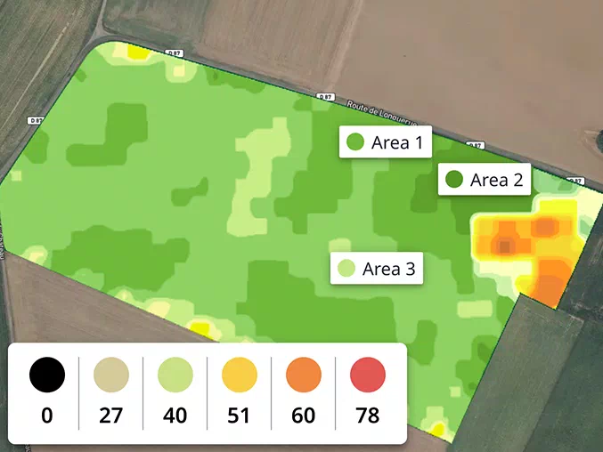
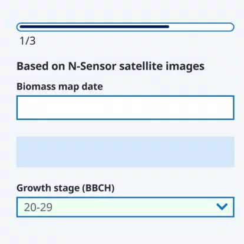
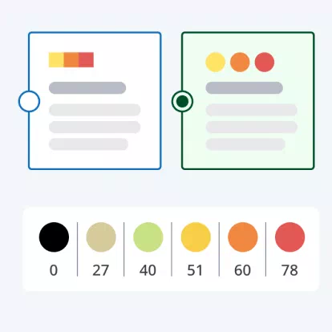
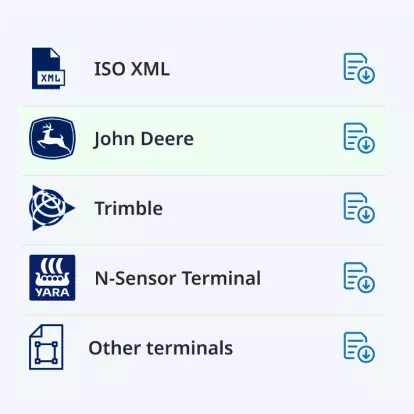

Apply N where it counts
Improve N use efficiency and secure yield goals.
Learn more
What can Atfarm’s Nutrition Planner do for you?

Adapt to in-field conditions
Make the most of every kilo of N applied by discovering the heterogeneity of your fields. Easily determine the exact place and N-rate to optimise growth potential.
Maximise yield for every kilo of N you apply by ensuring it’s placed where it’s needed.
Easily adapt to in-field conditions and work with the natural variability of your soil to achieve nutrient balance.
Create a map
Farmers and agronomists agree
Atfarm’s Variable N-Rate Application benefits you throughout the season
More homogeneous fields and crops
Better yield quality for every kilo of your nitrogen
Reduce the likelihood of nitrogen overuse or crop lodging
Get your N-Tester BT
From map to field in 5 steps:
1
Turn your N-Tester BT on by holding the On/Off button until the LED on top turns blue.
2
Turn your N-Tester BT on by holding the On/Off button until the LED on top turns blue.

3
Turn your N-Tester BT on by holding the On/Off button until the LED on top turns blue.

4
Turn your N-Tester BT on by holding the On/Off button until the LED on top turns blue.

5
Turn your N-Tester BT on by holding the On/Off button until the LED on top turns blue.